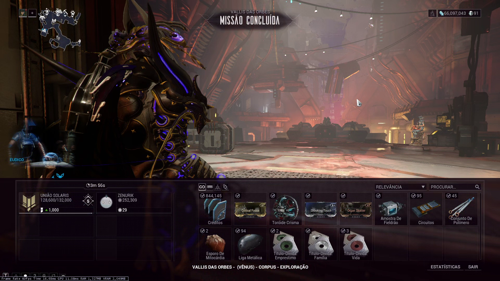

Se equipando para caçar Beneficiária: Guia de iniciante
Tudo que você precisa saber para começar a enfrentar a Beneficiária em Orb Vallis.

Guias
Este guia está dividido em quatro partes:
Como funciona?
As mecânicas do Beneficiária (fases de pernas e escudo).
Equipamentos
Warframe, armas, Operador e Amp recomendados
Modo Iniciante
Uma configuração simplificada para começar a caçar a Beneficiária.
Demonstrações
Vídeos de caçadas reais contra a Beneficiária
Requisitos
Para poder iniciar a caçada contra a Beneficiária, você precisa:
- Ter alcançado Rank 5 (Camarada) com a União Solaris
- Possuir uma Archgun equipada com um Gravimag
- Completar as fases anterior da caçada.
- Iniciar o contrato da fase 4, acessando os bastidores em Fortuna
Recompensas
Os dois principais motivos para caçar a Beneficiária são:
- Recursos de reputação com a União Solaris (Títulos-Dívida: Vida, Empréstimo e Família) e com os Vox Solaris (Toróide Crisma).
- Recompensa de créditos (Base: 125.000 créditos)
Com a Éfigie do Chroma/Prime, Boost de Dobro de Créditos e Benção de Créditos, é possível obter mais de 700.000 créditos por caçada de maneira consistente! Além disso, companheiros equipados com um dos mods Loyal Retriever ou Prosperous Retriever podem aumentar ainda mais o resultado final.
